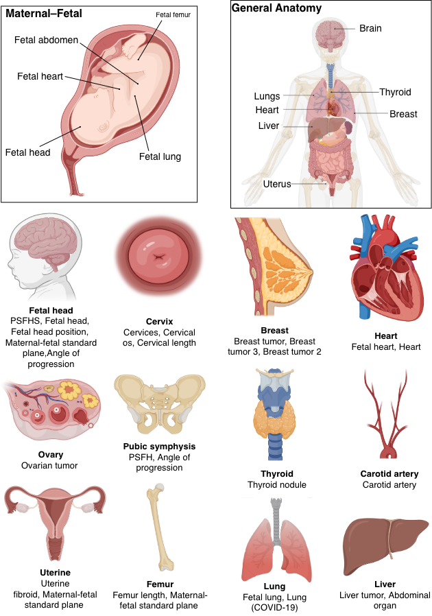

1University College Dublin 2Universitat de Barcelona 3Aalto University 4University of Auckland 5Jinan University

M2-US is a large-scale multi-domain, multi-task ultrasound dataset designed to support the development and systematic evaluation of generalizable ultrasound AI models. It comprises 67,620 ultrasound images from public datasets and retrospectively collected clinical cohorts, covering more than 30 anatomical structures and pathological targets across diverse clinical applications, including maternal-fetal, cardiac, vascular, abdominal, pulmonary, breast, thyroid, and gynecological imaging. M2-US supports four prediction tasks, including segmentation, classification, object detection, and landmark regression, organized into 26 subtasks. It provides standardized annotations, metadata, and predefined data partitions to facilitate reproducible benchmarking. Baseline experiments using DINOv3 demonstrate the dataset's applicability to heterogeneous ultrasound analysis tasks. By integrating diverse clinical domains and prediction tasks within a unified benchmark, M2-US supports research in multi-task learning, foundation model adaptation, and cross-domain generalization.
Ultrasound Images
Subtasks
Prediction Task Types
Anatomical and Pathological Targets
Scanner Models
Scanner Manufacturers
Representative ultrasound images and annotations from different clinical domains and prediction tasks.
Distribution of ultrasound images across prediction tasks and predefined data partitions.
| Target | Task ID | Training | Validation | Testing | Total |
|---|---|---|---|---|---|
| Segmentation | 15,991 | 2,674 | 9,449 | 28,114 | |
| PSFHS | head_symphysis_multi | 3,059 | 511 | 1,584 | 5,154 |
| Cervices | cervix_multi | 261 | 44 | 1,460 | 1,765 |
| Cervices os | cervix | 327 | 55 | 164 | 546 |
| Fetal head | fetal_head | 2,311 | 386 | 1,157 | 3,854 |
| Fetal lung | lung | 1,852 | 310 | 927 | 3,089 |
| Carotid artery | carotid_artery | 659 | 110 | 331 | 1,100 |
| Fetal heart | fetal_heart | 177 | 30 | 93 | 300 |
| Fetal abdomen | fetal_abdomen_multi | 952 | 159 | 447 | 1,558 |
| Ovarian tumor | ovary_tumor | 881 | 147 | 441 | 1,469 |
| Breast tumor | breast_lesion | 2,219 | 372 | 1,118 | 3,709 |
| Thyroid nodule | thyroid_nodule | 2,094 | 350 | 1,049 | 3,493 |
| Heart | cardiac_multi | 1,199 | 200 | 678 | 2,077 |
| Classification | 16,362 | 2,727 | 8,191 | 27,280 | |
| Fetal head position | fetal_head_pos_cls | 2,546 | 423 | 1,274 | 4,243 |
| Fetal head position | fetal_head_pos_cls | 2,546 | 423 | 1,274 | 4,243 |
| Fetal breech position | fetal_sacral_pos_cls | 483 | 77 | 242 | 802 |
| Lung (COVID-19) | lung_disease_3cls | 636 | 107 | 319 | 1,062 |
| Maternal-fetal standard plane | fetal_plane_cls | 7,439 | 1,240 | 3,721 | 12,400 |
| Breast tumor 3 | breast_3cls | 876 | 147 | 440 | 1,463 |
| Breast tumor 2 | breast_2cls | 555 | 93 | 279 | 927 |
| Liver tumor | liver_lesion_2cls | 3,279 | 547 | 1,640 | 5,466 |
| Abdominal organ | organ_cls | 219 | 37 | 110 | 366 |
| Fetal lung | lung_2cls | 329 | 56 | 166 | 551 |
| Detection | 3,515 | 587 | 1,759 | 5,861 | |
| Thyroid nodule | thyroid_nodule_det | 2,999 | 500 | 1,501 | 5,000 |
| Uterine fibroid | uterine_fibroid_det | 516 | 87 | 258 | 861 |
| Regression | 3,702 | 617 | 1,911 | 6,230 | |
| Angle of progression | IUGC | 2,818 | 470 | 1,465 | 4,753 |
| Cervical length | FUGC | 260 | 44 | 134 | 438 |
| Femur length | fetal_femur | 624 | 103 | 312 | 1,039 |
| Total | 39,570 | 6,605 | 21,445 | 67,485 | |
Bibtex